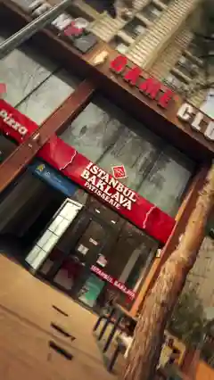

PROJECT / 0100:16 CINEMATIC / BRAND STORYHOSPITALITY · CINEMATIC REEL
↗Atmosphere in Motion
Visual storytelling · rhythm · music-led editing
HEY, I'M KARTIK KALWADIA
I turn raw footage and big ideas into cinematic edits, scroll-stopping reels, brand promos and AI-powered visuals.

SELECTED WORK / REFERENCE PROJECTS
Two recent reference edits, shown as featured projects.
Tap a card to watch the full video once its Drive link is connected.

PROJECT / 0100:16 CINEMATIC / BRAND STORYVisual storytelling · rhythm · music-led editing
Product focus · pacing · promotional storytelling
THESE ARE YOUR TWO FEATURED REFERENCE PROJECTS · MORE WORK CAN BE ADDED ANYTIME
MY CREATIVE RANGE
From the first idea to the final export,
I can help shape the whole video experience.
Reels, Shorts, YouTube videos, cinematic edits, event films, brand promos and ad creatives.
Sound effects, music sync, audio cleanup, subtitles, animated captions and engaging text overlays.
Transitions, motion graphics, colour correction, colour grading, visual effects and final polish.
AI-generated video concepts, image-to-video workflows, creative prompt writing and AI-assisted production.
DESKTOP · MOBILE · AI
A flexible workflow across mobile and PC,
with editing apps and AI creative tools.
Professional editing, grading and compositing
Fast, flexible edits made for mobile-first content
Generative video, creative exploration and prompt workflows
TOOLS ARE PART OF THE PROCESS. THE STORY IS ALWAYS THE MAIN THING.
HOW I WORK
A simple, creative workflow that keeps
the story and the final result in focus.
Goal, audience, reference and the message you want to deliver.
Plan the edit, visual direction, footage, music and AI prompts.
Fine cuts, sound effects, captions, colour and motion details.
Export in the right format, aspect ratio and platform-ready quality.
HAVE A VIDEO IDEA?
Need a reel, product promo, cinematic edit or AI video? Let's turn your idea into something worth watching.
START A CONVERSATION ↗CONTACT LINKS ARE PLACEHOLDERS — ADD YOUR OWN DETAILS BEFORE SHARING.